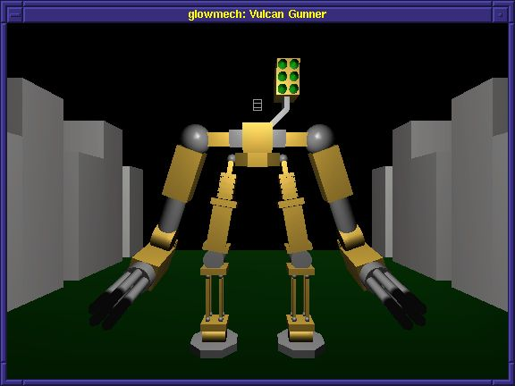
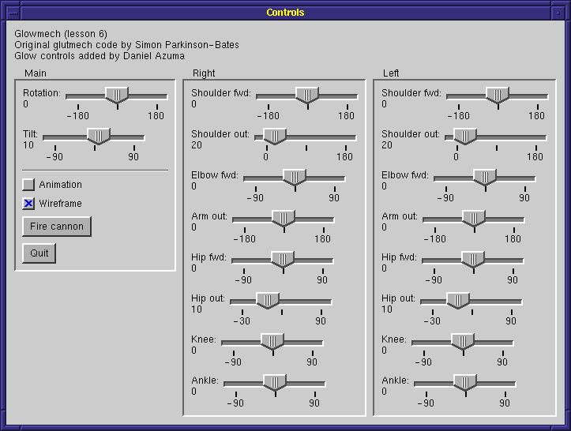

|
Contents |
Lesson 5 |
Lesson 7 |
| Code | Reference |
|---|---|
|
|
|
| Introduction |
This lesson will give an overview of how to mix GLUT and GLOW code. Although GLOW is designed to override and hide GLUT's interfaces, it is possible to use GLUT and GLOW side-by-side. This is often useful, for example, for adding a GLOW-based widget panel to an existing GLUT program. This lesson will step you through adding a widget panel to one of the common GLUT sample programs, detailing the changes that must be made to the program to support side-by-side integration with GLOW. At the end of this lesson, you should know how to write programs that use both the GLOW API and the GLUT API side by side.
| Glutmech: an overview |

Glutmech, written by Simon Parkinson-Bates, is one of the sample programs distributed with GLUT. It renders a mechanical robot that can be controlled joint-by-joint using a complex keyboard-based interface. It also includes an animation mode in which the robot automatically executes the motions necessary for walking.
Although an effective demo of OpenGL's rendering capabilities and GLUT-based user interaction, glutmech suffers from a steep learning curve. The robot includes so many moving parts that nearly every key on the keyboard is used for interactive control. As a result, it is very difficult to remember the key combinations necessary for a set of motions. The program might have benefited from a widget-based interface in which widgets were clearly labeled with the properties they controlled.
In this lesson, we'll add a control panel for the glutmech robot based on the widgets provided by GLOW. Nearly all of the original glutmech code will be left untouched. We need only to write the code for the control panel, and make a few very minor changes to glutmech's setup code to integrate the GLOW-based widget palette with the GLUT-based rendering code.
Most of the motions of the robot we'll control using sliders. A few of the other motions and state will be controlled by pushbuttons and check boxes. For the purposes of this lesson, we'll ignore the viewpoint and light position; in lesson 8, we'll learn about techniques that we could use to control those using our added widget palette.
| Writing the widget palette |
The figure below shows the control panel we're going to implement. Although it looks complicated, it really isn't. We're implementing only three types of widgets, pushbuttons for controlling the guns and for quitting the program, checkboxes for toggling the animation state and the wireframe/solid state, and sliders for controlling the robot's joints. The central and right hand panels contain controllers for joints on the right and left sides of the robot, respectively. (The sides are reversed because the robot is normally facing the viewer.)

You can read more about creating widget palettes in lesson 4, so only a brief overview will be given here. mechcontrols.h defines the class we're going to implement. It is a receiver for the events raised by the widget types we're going to implement. It also stores information it will need, including pointers to all its widgets, and the GLUT window ID of the rendering window.
Building the GLOW widget palette
The file mechcontrols.cpp contains the code for creating the widget palette and handling its events. First, we declare extern to get access to some of glutmech's state variables, which we will modify in response to widget manipulations.
extern int shoulder1, shoulder2, shoulder3, shoulder4, lat1, lat2, elbow1, elbow2, pivot, tilt, ankle1, ankle2, heel1, heel2, hip11, hip12, hip21, hip22, solid_part;Next comes the constructor for class MechControls. It first creates a widget palette window using the QuickPalette API described in lesson 4.
_controlWindow = new GlowQuickPaletteWindow("Controls");It then adds controls to the widget palette. Note the use of panels to help arrange the widgets. The principal arrangement direction for the window as a whole is vertical. However, the panel hpanel is created so that the three major panels, pointed to by panel, can be arranged horizontally. Within each panel, the widgets are arranged vertically. Each widget is set to notify our MechControls object of widget events. Finally, the last line arranges the widgets and shows the window.
_controlWindow->Pack();Handling the widget events
Let's take a look at the event receivers. The pushbutton event receiver is fairly straightforward. First we respond to the quit button.
if (message.widget == _quitButton) { exit(0); }In response to the fire button, first we call glutmech's function FireCannon to upcate the positions of the cannon object. However, notice the following line.
if (message.widget == _fireButton) { FireCannon(); Glow::RefreshGlutWindow(_mainWindowID); }The function Glow::RefreshGlutWindow() posts a refresh event for the window with the given GLUT id-- in this case, the main rendering window. It's equivalent to the GLUT 4 function glutPostWindowRedisplay(), but is available in GLOW even when GLUT 4 functions are not available. Since we're involving ourselves with GLUT code, we need to make sure we keep track of the current window.
Idle and menu status functions
The next event handler handles checkbox toggle events. The wireframe checkbox is pretty straightforward; we update glutmech's wireframe state variable solid_part, and post a refresh event for the GLUT window. The other checkbox, which toggles animation on or off, demonstrates an important note when integrating GLOW and GLUT code.
if (message.widget == _animationCheckbox) { if (message.state == GlowCheckBoxWidget::on) { // We need to use this special method instead of ::glutIdleFunc() Glow::SetIdleFunc(animation); } else { // We need to use this special method instead of ::glutIdleFunc() Glow::SetIdleFunc(NULL); } }The original glutmech code responds to the toggling of animation by calling glutIdleFunc() to enable or disable the reporting of idle events to its animation function. GLOW, however, requires control over the idle event callback in order to implement its idle event reporting system based on receivers. If you call glutIdleFunc() directly when GLOW is active, you risk confusing GLOW, or having GLOW undo your idle event callback. Therefore, GLOW provides the static method Glow::SetIdleFunc() as a workaround. It behaves exactly the same as ::glutIdleFunc(), but is implemented in a way that does not interfere with GLOW.
A similar issue concerns the glutMenuStatusFunc() callback. GLOW needs control of that callback in order to properly detect certain menu events. Therefore, GLOW provides the static method Glow::SetMenuStatusFunc(). It has the same signature and behaves exactly the same as glutMenuStatusFunc, but is implemented in a way that does not interfere with GLOW.
The last event handler listens for slider widget events. For each event it receives, it updates the appropriate state variable in glutmech, and then calls Glow::RefreshGlutWindow() to refresh the main drawing window.
For more information on receivers, which are used to implement the event handlers, see lesson 3. For more information on widgets, see lesson 4.
Source: mechcontrols.h
Source: mechcontrols.cpp
Reference: class Glow
Reference: class GlowQuickPaletteWindow
| Modifying the main program |
Finally, let's turn to glowmech.cpp. This is the original glutmech.c file, with a few minor modifications to support the widget palette. I've annotated the changes with the comment "FOR GLOW", so you can search for that string to find all the changes.
First, we need to include the glow headers and the header for our controls window.
#include "glow.h" GLOW_NAMESPACE_USING #include "mechcontrols.h"The next major change is down in the function menu_select(). Here, just as in our code to handle toggles of the animation check box, we need to replace calls to glutIdleFunc() with calls to Glow::SetIdleFunc().
switch (mode) { case 1: // glutIdleFunc(animation); Glow::SetIdleFunc(animation); break; case 2: // glutIdleFunc(NULL); Glow::SetIdleFunc(NULL); break; ...Finally, let's go down to main(). There are two major changes here. First, we changed the call glutInit() with the corresponding GLOW call Glow::Init(), and the call to glutMainLoop() with Glow::MainLoop(). Finally, we instantiate our control panel widget by adding this line before entering the main loop:
new MechControls(windowID);That's it! For the most part, the rest of the code has been left alone.
Could you summarize what needs to be done to add GLOW code to a GLUT program?
Sure. First, you need to replace a few calls. The call to glutInit() needs to be replaced with Glow::Init(). The call to glutMainLoop() needs to be replaced with Glow::MainLoop(). Finally, all calls to glutIdleFunc() need to be replaced with Glow::SetIdleFunc(), and all calls to glutMenuStatusFunc() need to be replaced with Glow::SetMenuStatusFunc().
Next, you need to write the GLOW code to set up GLOW-based windows and user interface elements and to connect together the event handlers. This setup should be done at the same time as the GLUT setup. Note that the constructors for GLOW windows, subwindows and menus can change GLUT state such as display mode and initial window size, so make sure those get set again if you create GLUT windows after having constructed GLOW objects.
Windows with GLUT callbacks and windows with GLOW event receivers can exist side by side and will not interfere with one another. However, you should not attempt to combine those windows (e.g. do not attempt to define GLUT callbacks for a window you created with GLOW.) Finally, remember that, since additional windows are being created, you'll need to take care to see that the current window is correct in your GLUT-based code. In particular, when handling a GLOW event, the current window is typically set to the GLOW window involved. And remember that, when handling idle events, the current window state is not usually predictable.
Source: glowmech.cpp
Reference: class Glow
| Where to go from here |
Because GLUT does not come with a widget system by itself, many GLUT-based programs often require a convoluted keyboard-based interface similar to the one used by glutmech. You now know how to improve those interfaces by adding GLOW widgets. Try it on some of the other GLUT sample programs. Try it on your own programs!
|
Contents |
Lesson 5 |
Lesson 7 |
The GLOW Toolkit